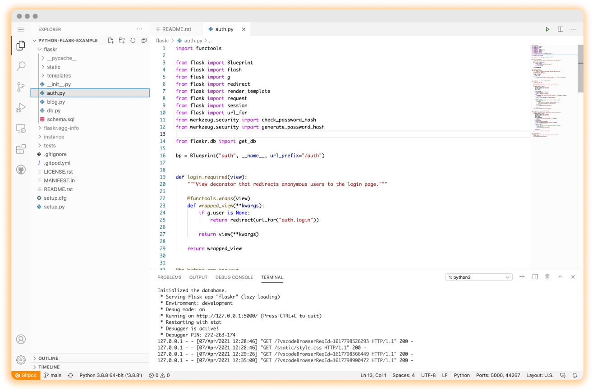

Always
Ready to Code.


Select project,
check dependencies, checkout branch, view readme.txt, install tools, run build, run test,start coding.
Think CI/CD for dev environments
We invented prebuilds so application code, configuration and infrastructure can all be stored as machine-executable code in your git repositories and applied to dev environments automatically and continuously.

Remote-first. Secure by design.
You no longer need an over-powered laptop to code, Gitpod works just as smoothly on a Chromebook or iPad. All you need is a browser. Gitpod centralizes all source code and never stores it on insecure machines and networks.
 Chrome Extension
Firefox Extension
Chrome Extension
Firefox Extension
Used by 400,000+ developers.
GitPod is incredibly cool.
In my opinion, this is a big step in open source software contribution. I'm excited to see where we go from here.

Let's say we were overwhelmed how smooth @gitpod workspaces creation & own Docker image for workspaces worked.
Plus, installing @code extensions from the store and integrating @gitlab CI. That blew my mind entirely, and that is hard ;)
Look at any PR (pull request) in a full coding environment where you can edit, build, and test the PR code, by just prepending "gitpod.io#" to the PR URL. Super useful for reviewing/testing stuff without having to check it out locally!

I think I’m in love with @gitpod. It’s such a powerful tool. I’ve learned so much in the past week just from stumbling across Github repos that interest me and appending “http://gitpod.io/#” to the URL. A+ tool all around.
Get started now
Connect Git repository
Select a Git provider to start with an existing project from any Git context.
Continue with GitLab
Continue with GitHub
Continue with Bitbucket
Or prefix any GitLab, GitHub or Bitbucket URL with
gitpod.io/#Launch an example workspace
Dive into one of our example workspaces
 Node or TypeScript
Node or TypeScript
 Rust
Rust
 Svelte
Svelte